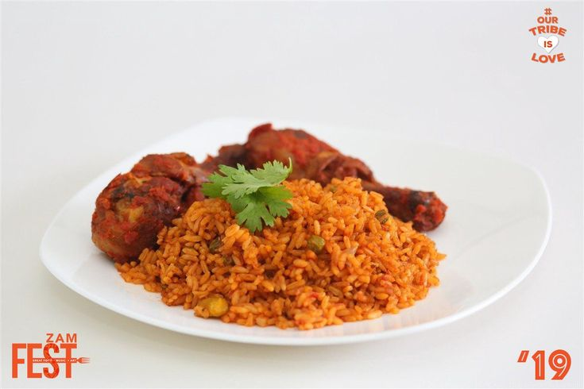

Jollof Rice

Description.
Jollof Rice is an African dish which precisely originates from West Africa.
It is a sweet meal which has all nutrients a person needs. Its primary ingredients are Rice and chicken.
Ingredients
Tomato Sauce:
- 1 large, ripe tomato, cored and quartered
- 1 large red bell pepper, seeded and roughly chopped
- 1 whole habanero pepper, stem removed
- 1 whole Fresno chili, or jalapeño, stem removed
- 4 cloves garlic, peeled
- 1 tablespoon minced ginger
- 2 cups water
Rice:
- 1/3 cup olive oil
- 1 red onion, diced
- 1 teaspoon salt, plus more to taste
- 1/4 cup tomato paste
- 2 tablespoons smoked paprika
- 1 teaspoon curry powder
- 1 teaspoon cumin
- 1 teaspoon dried thyme
- 1/2 teaspoon freshly ground black pepper
1/4 teaspoon turmeric
2 1/4 cups basmati rice
bay leaf
tablespoon chicken bouillon paste
1/4 cup chopped green onion for garnish (optional)
Steps:
-
Combine tomato, red bell pepper, habanero pepper, fresno chili, garlic, ginger, and water in a blender for the sauce.
Blend on high until smooth and set aside.
-
Heat olive oil in a saucepan over medium heat. Add onion and salt and sauté until onion starts to soften, 4 to 5 minutes.
Clear space in the middle of the pan, add tomato paste, and sauté for 2 to 3 minutes. Season with paprika, curry powder, cumin, thyme, pepper, and turmeric;
continue cooking for 1 to 2 minutes until everything is well combined.
-
Turn off the heat, and stir in the rice, making sure every grain of rice is coated with the oil-tomato mixture.
Add bay leaf and chicken bouillon paste.
-
Turn heat to high, stir in tomato sauce, and bring to a vigorous simmer.
Cover with a tight fitting lid, reduce heat to medium-low, and simmer for 20 minutes.
Do not remove the lid or stir rice.
-
Turn off heat after 20 minutes, and set the timer for 12 minutes.
Allow rice to sit and do not remove the lid.
-
After the 12 minutes are up, remove lid, and fluff rice with a fork, separating all the grains.
Serve garnished with green onions and chopped cilantro.
Note: If rice seems to be a little undercooked at this point, stop fluffing.
Pat the rice down gently with the back of the fork, cover tightly again, and set heat to medium low.
Cook for another 5 minutes, and check again.
Take me back to home page!